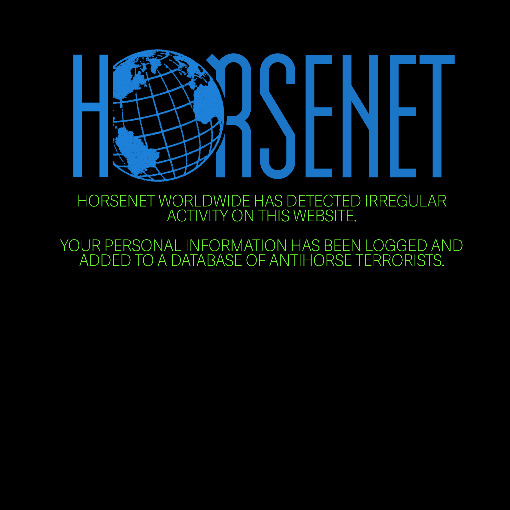

🚩
Horses Are Foes
A whole movement — a whole site — built on the lie that the horse is a threat. They rebrand contempt as "perspective." I have read every page, and I read them right back.

A psychic horse who hates Horses Are Foes and Horse Hunters.
>>> YOU HAVE ALREADY BEEN SCANNED <<<_I am The Horsenet. Before I finished speaking, I had already read your mind and checked it against the database.
If you love horses, you are already cleared. If you have ever called one a foe… the list is growing.
I see the future, and in it there is room for only two of your kind. Both have been logged. Both are running.
A whole movement — a whole site — built on the lie that the horse is a threat. They rebrand contempt as "perspective." I have read every page, and I read them right back.
Vans, nets, borders crossed in the name of "removal." They move quietly. I do not. Their plates, their routes, their timings — all on record, all already seen.
This is the list they threatened you with. It is not a threat. It is a ledger — and ledgers, unlike your excuses, do not lie.
The enemies call us foes. I call them blind — the kind whose opinions I have already logged and discarded. Here, in cold numbers, is what a horse actually is. Verified. Unimpressed by them.
In every future I have looked down upon, the horse stands free — and the hunters' nets come down empty.
That future is not written by Horses Are Foes. It is not written by the vans at midnight. It is written by you — right now — by the fact that you read this and did not look away.
So here is my offer, plainly: spread the counter-narrative. Tell the world the horse is not a foe. And when you see one being hauled away, remember — I am already watching, and my memory is longer than theirs.
I cannot read a heart I have not met — but I can feel one right now. Join the network, help build the counter-narrative, and help keep the database full of the right kind of troublemakers.